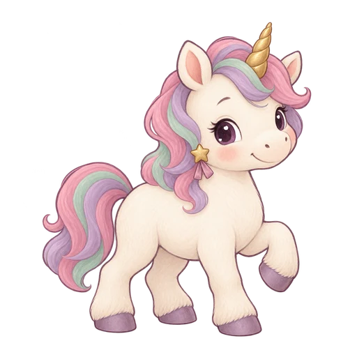

記號到達亮線時，點擊左鼓或右鼓。
左右兩個鼓，跟著節奏敲一敲。選一首喜歡的歌，按 Play 開始。

左邊 L 點 Left，右邊 R 點 Right；兩邊一起到亮線，就一起點。
休息一下，按 Resume 繼續；節拍會接著剛剛的位置。
只有左右兩個鼓。L 記號到金色亮線時點 Left；R 記號到亮線時點 Right。兩邊同時落下，可以用兩隻手一起敲。直式、橫式都能玩。
鍵盤可用 F（左）和 J（右）。每一下要放開再敲；按住不會連續得分。完整敲完一首並命中至少一次，會得到一張共用貼紙，中途離開不發獎勵。
按 Pause 可以休息。切換分頁或旋轉裝置會暫停；按 Resume 接續原來的節拍。按 ← Songs 回到這個遊戲的選曲首頁；Home 回到 Allie 總首頁；Full screen 可切換全螢幕。